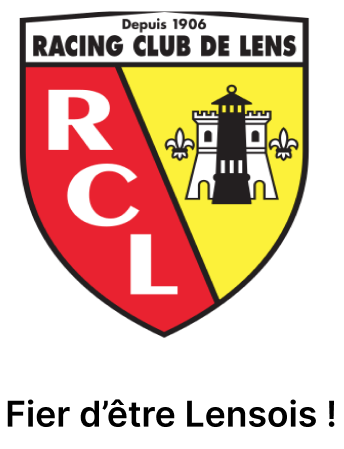

The Racing Club de Lens plays at the Bollaert Delelis stadium. The club was founded in 1906. The club has played with professional status since 1934, despite a year as an amateur between 1969 and 1970 following poor results and financial difficulties. due to the crisis in the coal and mining sector, the club's main financial player at the time. The club's first colors are green and black, in reference to Place Verte and coal. In 1912, Messrs. Van den Weghe, Lotin and Douterlinghe were the successive presidents of the club.
Club president :
Joseph Oughourlian
He has been Chairman of RCL since 16 June 2018.

Trainer:
Franck Haise
He has been coach since February 2020 and general manager since October 2022.
| National competitions |
|---|
| French Division 1 champion in 1998 |
| French vice-champion in 1956, 1957, 1977, 2002, 2023 |
| French division 2 champion in 1937, 1949, 1973 |
| French Ligue 2 champion in 2009 |
| League 1 champion in 1999 |
| Ligue 1 finalist in 2008 |
| International competitions |
|---|
| Intertoto Cup winner in 2005 |